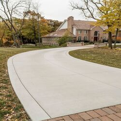

-
Houston Concrete Supply: Extending Your Driveway
Posted on June 21, 2022 by Phoebee Johnson

With help form our Houston concrete supply, you can make your driveway bigger and more functional.
Wish your driveway was bigger? With help from your Houston concrete supply, you can make that wish a reality. Extending a driveway is a common project that can add a lot of value and function for your home. In this article, we’ll discuss some of the reasons to extend your concrete driveway, potential challenges, as well as how to ensure you have the right type of concrete for the job.
Why Extend Your Concrete Driveway?
Extending a concrete driveway can offer many benefits for your home. Perhaps the most popular reason for driveway extension is to have more room to park. This helps give you space for multiple cars, RVs, campers, boats, and other vehicles. Extra parking space also has another benefit of increasing your home’s value.
Another reason to consider extending your driveway is to make the concrete look proportional to your home. If the driveway is too narrow or small, it might look odd in comparison to your house and property. Extending the width or length can help with this issue.
Having less lawn is also an up side. Larger driveways mean less grass to water, mow, and pull weeds in. Therefore, many see this as an added bonus when extending their driveway.
Of course, there are several things to consider before extending your driveway. For instance, you will need to check with your HOA. Sometimes they have rules about the size of the driveway or what it looks like. Also, keep in mind that it should look proportional to your house. While you certainly can create a massive driveway with help from your Houston concrete supplier, it may not look right. For instance, if you add enough driveway for four cars but only have a one car garage, this can end up looking unbalanced and may actually detract from your home.
Getting the Right Mix from Your Houston Concrete Supply
When extending your driveway, you want sections that will last. This means making sure that you have the right mix of concrete for strength and durability. As a Houston ready mix contractor, we create precise and customized mixes tailored to your project. Our team works with you to make concrete that will work well for your driveway extension.
When extending onto an existing concrete driveway, keep in mind that you probably want it to match for curb appeal. In many cases, the new concrete section may not exactly match the old concrete driveway. In these cases, you may want to resurface the old driveway at the same time with the same type of concrete from your Houston concrete supply to ensure the color and surface match each other. Another option would be to stain both surfaces after everything cures. Our experts can help you decide which is best for your home.
TEXAN Concrete Ready Mix – Top Houston Concrete Supplier for 14 Years
When you need superior quality concrete, talk to our specialists at TEXAN Concrete Ready Mix. We are a top Houston concrete supply company offering custom ready mix formulations for residential and commercial projects. We are a local company offering effective, cost-saving concrete solutions for all your needs. Get in touch now for a free quote.
This entry was posted in Concrete, Concrete Contractor, Residential Concrete. Bookmark the permalink.